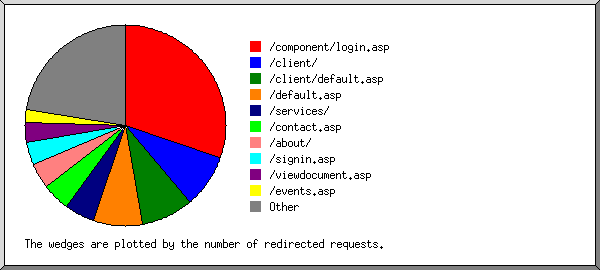

Web Server Statistics for es57045 Web Server Statistics for es57045
Web Server Statistics for es57045 Web Server Statistics for es57045(Go To: Top: General Summary: Monthly Report: Daily Summary: Hourly Summary: Failed Referrer Report: Search Word Report: Browser Report: Browser Summary: Operating System Report: Status Code Report: File Size Report: Redirection Report: Request Report)
This report contains overall statistics.
(Figures in parentheses refer to the 7-day period ending Jan 31
2004 at 11:59 PM).
Successful requests: 7,575 (2,104)
Average successful requests per day: 248 (300)
Logfile lines without status code: 93 (0)
Successful requests for pages: 122 (4)
Average successful requests for pages per day: 3 (0)
Failed requests: 282 (70)
Redirected requests: 1,590 (504)
Distinct files requested: 239 (163)
Distinct hosts served: 446 (153)
Corrupt logfile lines: 1
Unwanted logfile entries: 36
Data transferred: 43.003 Mbytes (10.692 Mbytes)
Average data transferred per day: 1.408 Mbytes (1.527 Mbytes)
(Go To: Top: General Summary: Monthly Report: Daily Summary: Hourly Summary: Failed Referrer Report: Search Word Report: Browser Report: Browser Summary: Operating System Report: Status Code Report: File Size Report: Redirection Report: Request Report)
This report lists the activity in each month.
Each unit ( ) represents 4 requests
for pages or part thereof.
) represents 4 requests
for pages or part thereof.
month: #reqs: #pages: --------: -----: ------: Jan 2004: 7575: 122:Busiest month: Jan 2004 (122 requests for pages).
(Go To: Top: General Summary: Monthly Report: Daily Summary: Hourly Summary: Failed Referrer Report: Search Word Report: Browser Report: Browser Summary: Operating System Report: Status Code Report: File Size Report: Redirection Report: Request Report)
This report lists the total activity for each day of the week, summed over all the weeks in the report.
Each unit () represents 2 requests
for pages or part thereof.
day: #reqs: #pages: ---: -----: ------: Sun: 302: 2:Tue: 1246: 76:
Wed: 1146: 4:
Sat: 292: 0:
(Go To: Top: General Summary: Monthly Report: Daily Summary: Hourly Summary: Failed Referrer Report: Search Word Report: Browser Report: Browser Summary: Operating System Report: Status Code Report: File Size Report: Redirection Report: Request Report)
This report lists the total activity for each hour of the day, summed over all the days in the report.
Each unit () represents 2 requests
for pages or part thereof.
hour: #reqs: #pages: ----: -----: ------: 0: 262: 2:
(Go To: Top: General Summary: Monthly Report: Daily Summary: Hourly Summary: Failed Referrer Report: Search Word Report: Browser Report: Browser Summary: Operating System Report: Status Code Report: File Size Report: Redirection Report: Request Report)
This report lists the referrers containing broken links to the site.
Listing referring URLs, sorted by the number of failed requests.
#reqs: URL
-----: ---
10: http://www.dbates.com/signin.asp
10: http://www.whois.sc/
4: http://www.chubb.com/cgi-bin/agentlookup/ziplookupmore_v2.cgi
4: http://www.durhamandbates.com/signin.asp
3: http://www.durhamandbates.com/services/plines_c.asp
3: http://www.durhamandbates.com/
2: http://www.chubb.com/cgi-bin/agentlookup/ziplookupmore4cpi.cgi
1: http://www.dbates.com/
1: http://www.dbates.com/client/ContactLumber/Team chart.htm
1: http://www.geocities.com/webrecommend/
1: https://www.dbates.com/agent/cpmain.asp
(Go To: Top: General Summary: Monthly Report: Daily Summary: Hourly Summary: Failed Referrer Report: Search Word Report: Browser Report: Browser Summary: Operating System Report: Status Code Report: File Size Report: Redirection Report: Request Report)
This report lists which words people used in search engines to find the site.
Listing query words, sorted by the number of requests.
#reqs: search term
-----: -----------
32: durham
30: bates
15: and
13: &
7: model
5: ships
4: ship
3: insurance
2: glass
2: portland
2: agencies
2: dbates
2: collection
2: whaling
2: models
2: cases
2: for
1: oregon
1: tankers
1: agency
1: sailor
1: bates/
1: @dbates.com
1: made
(Go To: Top: General Summary: Monthly Report: Daily Summary: Hourly Summary: Failed Referrer Report: Search Word Report: Browser Report: Browser Summary: Operating System Report: Status Code Report: File Size Report: Redirection Report: Request Report)
This report lists the browsers used by visitors.
Listing the top 40 browsers by the number of requests, sorted by the number of requests.
#reqs: browser -----: ------- 1812: Mozilla/4.0 (compatible; MSIE 6.0; Windows NT 5.0) 1763: Mozilla/4.0 (compatible; MSIE 6.0; Windows 98; .NET CLR 1.0.3705; .NET CLR 1.1.4322) 749: Mozilla/4.0 (compatible; MSIE 6.0; Windows NT 5.1) 290: MSFrontPage/4.0 271: MSFrontPage/5.0 226: Mozilla/4.0 (compatible; MSIE 6.0; Windows 98) 212: Mozilla/4.0 (compatible; grub-client-1.5.3; Crawl your own stuff with http://grub.org) 175: Mozilla/4.0 (compatible; MSIE 6.0; Windows NT 5.1; .NET CLR 1.1.4322) 172: Mozilla/4.0 (compatible; MSIE 6.0; Windows NT 5.1; .NET CLR 1.0.3705) 153: Mozilla/4.0 (compatible; MSIE 6.0; Windows NT 5.1; .NET CLR 1.0.3705; .NET CLR 1.1.4322) 137: Googlebot/2.1 ( http://www.googlebot.com/bot.html) 109: Mozilla/4.0 (compatible; MSIE 6.0; Windows NT 5.0; T312461) 98: Mozilla/4.0 (compatible; MSIE 6.0; Windows 98; Win 9x 4.90; .NET CLR 1.1.4322) 75: Mozilla/4.0 (compatible; MSIE 5.01; Windows NT 5.0) 71: Mozilla/2.0 (compatible; MS FrontPage 5.0) 66: Mozilla/4.0 (compatible; MSIE 6.0; Windows NT 5.0; .NET CLR 1.1.4322) 65: Microsoft Data Access Internet Publishing Provider Protocol Discovery 62: Mozilla/4.0 (compatible; MSIE 6.0; Windows NT 5.1; Q312461) 59: Mozilla/4.0 (compatible; MSIE 6.0; Windows NT 5.0; .NET CLR 1.0.3705) 59: Mozilla/4.0 compatible ZyBorg/1.0 Dead Link Checker (wn.zyborg@looksmart.net; http://www.WISEnutbot.com) 53: Mozilla/4.0 (compatible; MSIE 5.5; Windows NT 5.0) 49: Mozilla/5.0 (Slurp/cat; slurp@inktomi.com; http://www.inktomi.com/slurp.html) 46: Mozilla/4.0 (compatible; MSIE 5.0; Windows 98; DigExt; AT&T WNS5.0) 45: Mozilla/5.0 (Windows; U; Win98; en-US; rv:1.0.1) Gecko/20020823 Netscape/7.0 42: Mozilla/4.0 (compatible; MSIE 6.0; Windows 98; Win 9x 4.90; Cox High Speed Internet Customer; .NET CLR 1.0.3705) 38: Mozilla/4.0 (compatible; MSIE 6.0; Win32) 38: Mozilla/3.0 (compatible; Indy Library) 36: Mozilla/5.0 (Windows; U; Windows NT 5.1; en-US; rv:1.4) Gecko/20030624 Netscape/7.1 (ax) 35: Mozilla/4.0 (compatible; MSIE 6.0; Windows NT 4.0) 32: Java/1.4.1_04 32: Mozilla/4.0 (compatible; MSIE 6.0; Windows NT 5.0; Hotbar 4.1.8.0; .NET CLR 1.0.3705) 29: Mozilla/4.0 (compatible; grub-client-1.4.3; Crawl your own stuff with http://grub.org) 28: Mozilla/5.0 (Windows; U; Win98; en-US; rv:0.9.4) Gecko/20011128 Netscape6/6.2.1 27: Mozilla/4.0 (Windows 98 4.10) Java/1.4.1-beta 26: Mozilla/3.01 (compatible;) 23: Mozilla/4.0 (compatible; grub-client-1.3.7; Crawl your own stuff with http://grub.org) 20: Mozilla/5.0 (Windows; U; Windows NT 5.0; en-US; rv:1.0.1) Gecko/20020823 Netscape/7.0 20: Scooter/3.3.vscooter 16: Mozilla/4.0 (compatible; MSIE 6.0; AOL 8.0; Windows 98; .NET CLR 1.1.4322) 15: Mozilla/4.0 (compatible; MSIE 6.0; Windows NT 5.1; Viewpoint Construction Software; .NET CLR 1.1.4322) 297: [not listed: 50 browsers]
(Go To: Top: General Summary: Monthly Report: Daily Summary: Hourly Summary: Failed Referrer Report: Search Word Report: Browser Report: Browser Summary: Operating System Report: Status Code Report: File Size Report: Redirection Report: Request Report)
This report lists the vendors of visitors' browsers.
Listing the top 20 browsers by the number of requests, sorted by the number of requests.
#reqs: browser
-----: -------
5986: MSIE
5726: MSIE/6
260: MSIE/5
561: MSFrontPage
290: MSFrontPage/4
271: MSFrontPage/5
488: Netscape (compatible)
150: Netscape
101: Mozilla/1
137: Googlebot
137: Googlebot/2
67: Netscape
33: Netscape/4
28: Netscape/6
5: Netscape/3
65: Microsoft Data Access Internet Publishing Provider Protocol Discovery
34: Java
34: Java/1
20: Scooter
20: Scooter/3
12: FAST-WebCrawler
12: FAST-WebCrawler/3
9: Microsoft Data Access Internet Publishing Provider Cache Manager
7: NPBot (http:
7: NPBot (http://www
6: NaverBot-1.0 (NHN Corp.
6: NaverBot-1.0 (NHN Corp. /
6: SurveyBot
6: SurveyBot/2
4: Yahoo-MMCrawler
4: Yahoo-MMCrawler/3
4: ia_archiver
3: TurnitinBot
3: TurnitinBot/1
3: http:
3: http://www
2: psbot
2: psbot/0
2: appie
2: appie/1
5: [not listed: 4 browsers]
(Go To: Top: General Summary: Monthly Report: Daily Summary: Hourly Summary: Failed Referrer Report: Search Word Report: Browser Report: Browser Summary: Operating System Report: Status Code Report: File Size Report: Redirection Report: Request Report)
This report lists the operating systems used by visitors.
Listing operating systems, sorted by the number of requests for pages.
#: #reqs: #pages: OS --: -----: ------: -- 1: 1238: 78: OS unknown 2: 6144: 44: Windows : 2221: 25: Windows 2000 : 2149: 19: Windows 98 : 19: 0: Windows 95 : 129: 0: Unknown Windows : 1349: 0: Windows XP : 38: 0: Windows 32-bit : 179: 0: Windows ME : 60: 0: Windows NT 3: 180: 0: Robots 4: 9: 0: Macintosh : 9: 0: Macintosh PowerPC
(Go To: Top: General Summary: Monthly Report: Daily Summary: Hourly Summary: Failed Referrer Report: Search Word Report: Browser Report: Browser Summary: Operating System Report: Status Code Report: File Size Report: Redirection Report: Request Report)
This report lists the HTTP status codes of all requests.
Listing status codes, sorted numerically.
#reqs: status code
-----: -----------
6337: 200 OK
4: 206 Partial content
1590: 302 Document found elsewhere
1234: 304 Not modified since last retrieval
1: 400 Bad request
18: 401 Authentication required
240: 404 Document not found
23: 500 Internal server error
(Go To: Top: General Summary: Monthly Report: Daily Summary: Hourly Summary: Failed Referrer Report: Search Word Report: Browser Report: Browser Summary: Operating System Report: Status Code Report: File Size Report: Redirection Report: Request Report)
This report lists the sizes of files.
size: #reqs: %bytes:
-----------: -----: ------:
0: 1700: :
1b- 10b: 0: :
11b- 100b: 0: :
101b- 1kb: 1993: 1.37%:
1kb- 10kb: 2798: 15.82%:
10kb-100kb: 1054: 74.19%:
100kb- 1Mb: 30: 8.63%:
(Go To: Top: General Summary: Monthly Report: Daily Summary: Hourly Summary: Failed Referrer Report: Search Word Report: Browser Report: Browser Summary: Operating System Report: Status Code Report: File Size Report: Redirection Report: Request Report)
This report lists the files that caused requests to be redirected to another file. (Usually directories with the final slash missing, or CGI scripts that forced redirections.)

Listing the top 30 files by the number of redirected requests, sorted by the number of redirected requests.
#reqs: file
-----: ----
481: /component/login.asp
138: /client/
131: /client/default.asp
125: /default.asp
78: /services/
72: /contact.asp
65: /about/
59: /signin.asp
51: /viewdocument.asp
26: /viewdocument.asp?ID=TBBLGBSX
25: /viewdocument.asp?ID=QEBPEDBU
31: /events.asp
31: /about/news.asp
30: /forms.asp
29: /risk101.asp
28: /customer.asp
26: /loadform.asp
18: /loadform.asp?ID=96-859-240-5
25: /focus/mvrreg/mvrreg0.asp
24: /links.asp
21: /focus/mvrreg/default.asp
21: /client/contactlumber/
20: /focus/euse/euse1.asp
20: /sitemap.asp
19: /editform.asp
15: /agent/default.asp
15: /privacy.asp
12: /agent/
8: /directry.asp
4: /focus/euse/default.asp
3: /focus/euse/
3: /about/shiptour/
2: /focus/mvrreg/
3: [not listed: 3 files]
(Go To: Top: General Summary: Monthly Report: Daily Summary: Hourly Summary: Failed Referrer Report: Search Word Report: Browser Report: Browser Summary: Operating System Report: Status Code Report: File Size Report: Redirection Report: Request Report)
This report lists the files on the site.
Listing files with at least 20 requests, sorted by the number of requests.
#reqs: %bytes: last time: file -----: ------: ------------------: ---- 511: 1.09%: Jan/31/04 8:15 PM: /resource/dbates.css 506: 4.91%: Jan/28/04 6:36 PM: /_vti_bin/_vti_aut/author.dll 378: 0.02%: Jan/31/04 3:02 AM: /default.asp 323: 10.63%: Jan/30/04 11:32 PM: /resource/title.jpg 263: 4.66%: Jan/31/04 8:15 PM: /resource/toc.gif 247: 0.16%: Jan/31/04 9:03 PM: /component/login.asp 217: 12.05%: Jan/31/04 3:02 AM: /resource/homepics.jpg 217: 0.70%: Jan/31/04 3:02 AM: /resource/t_welcome.jpg 167: 8.22%: Jan/22/04 4:31 PM: /resource/toc.jpg 134: 0.09%: Jan/30/04 5:29 PM: /signin.asp 122: 0.46%: Jan/30/04 5:29 PM: /resource/linetab.gif 121: 0.87%: Jan/31/04 3:02 AM: /resource/title.gif 119: 0.51%: Jan/30/04 5:29 PM: /resource/logon.gif 100: 0.92%: Jan/30/04 5:29 PM: /client/default.asp 95: 0.18%: Jan/31/04 8:15 PM: /resource/spacer.gif 93: : Jan/31/04 1:52 AM: /about/default.asp 92: : Jan/30/04 11:33 PM: /services/default.asp 86: : Jan/30/04 11:33 PM: /contact.asp 85: 0.38%: Jan/30/04 5:29 PM: /client/document/resource/client.css 83: 0.17%: Jan/30/04 5:29 PM: /client/document/resource/dotdoc.gif 82: 0.10%: Jan/30/04 5:29 PM: /client/resource/news.gif 82: 0.19%: Jan/30/04 5:29 PM: /client/resource/serviceteam.gif 82: 0.23%: Jan/30/04 5:29 PM: /client/resource/dbhome.gif 82: 0.10%: Jan/30/04 5:29 PM: /client/resource/forms.gif 82: 0.47%: Jan/30/04 5:29 PM: /client/contactlumber/logo.gif 82: 0.27%: Jan/30/04 5:29 PM: /client/resource/coverage.gif 82: 0.07%: Jan/30/04 5:29 PM: /client/resource/links.gif 82: 0.34%: Jan/30/04 5:29 PM: /client/resource/title.gif 77: 0.07%: Jan/30/04 5:29 PM: /client/resource/divider.gif 71: 11.09%: Jan/30/04 11:33 PM: /resource/contacttx.jpg 60: 0.12%: Jan/30/04 11:33 PM: /resource/dotdoc.jpg 58: 4.36%: Jan/30/04 11:33 PM: /directry.asp 55: 0.07%: Jan/28/04 6:35 PM: /_vti_bin/shtml.dll 54: 0.25%: Jan/30/04 11:33 PM: /resource/t_contact.jpg 53: 0.21%: Jan/31/04 8:15 PM: /resource/t_about.jpg 53: 0.13%: Jan/31/04 8:15 PM: /resource/x_master.jpg 50: 0.19%: Jan/30/04 5:30 PM: /privacy.asp 23: 0.19%: Jan/30/04 5:30 PM: /privacy.asp?confirm=1 47: 0.03%: Jan/28/04 6:35 PM: / 47: 0.17%: Jan/30/04 11:32 PM: /resource/dialc.jpg 46: 0.13%: Jan/30/04 11:32 PM: /resource/dialp.jpg 45: 6.51%: Jan/30/04 11:32 PM: /resource/about.jpg 43: 1.25%: Jan/30/04 11:32 PM: /resource/abouttx.jpg 42: : Jan/31/04 5:55 AM: /services/prof0.asp 41: 0.12%: Jan/30/04 11:32 PM: /resource/dialn.jpg 40: 0.09%: Jan/29/04 11:52 PM: /agent/document/resource/agent.css 40: 0.69%: Jan/29/04 11:52 PM: /agent/cpmain.asp 39: : Jan/31/04 12:46 PM: /about/begin.asp 36: : Jan/30/04 4:55 PM: /services/marine_c.asp 35: : Jan/31/04 11:20 AM: /services/marine_x.asp 34: : Jan/30/04 11:33 PM: /customer.asp 33: 0.18%: Jan/22/04 9:56 PM: /client/contactlumber/content/dkred_oval.gif 33: : Jan/31/04 8:15 PM: /about/ships.asp 31: 0.18%: Jan/22/04 9:56 PM: /client/contactlumber/contact+lumber+logo.gif 29: : Jan/30/04 11:33 PM: /events.asp 29: : Jan/29/04 5:06 PM: /services/clines0.asp 29: 0.17%: Jan/30/04 11:33 PM: /resource/t_resource.jpg 28: : Jan/29/04 7:47 PM: /about/history.asp 27: : Jan/30/04 12:53 AM: /sitemap.asp 26: 0.12%: Jan/28/04 6:35 PM: /_vti_inf.html 26: 0.15%: Jan/30/04 11:33 PM: /resource/t_events.jpg 26: : Jan/30/04 11:32 PM: /risk101.asp 25: : Jan/29/04 6:33 PM: /services/marine0.asp 25: 5.65%: Jan/22/04 1:20 AM: /resource/services.jpg 24: 0.24%: Jan/22/04 9:56 PM: /client/contactlumber/default.htm 24: 0.10%: Jan/30/04 4:23 PM: /resource/t_sitemap.jpg 23: 0.13%: Jan/29/04 6:33 PM: /resource/special.jpg 23: : Jan/29/04 3:29 AM: /services/clines_r.asp 23: 0.07%: Jan/30/04 5:30 PM: /component/forms/form.css 23: 0.04%: Jan/30/04 5:30 PM: /resource/spacerline.gif 23: 0.07%: Jan/30/04 5:30 PM: /component/forms/validation.js 22: : Jan/30/04 3:22 PM: /links.asp 22: 0.29%: Jan/30/04 5:30 PM: /resource/t_privacy.jpg 22: 0.07%: Jan/30/04 3:22 PM: /resource/t_links.jpg 22: : Jan/29/04 3:29 AM: /services/clines_s.asp 22: : Jan/30/04 11:32 PM: /about/expand.asp 22: 0.17%: Jan/30/04 5:30 PM: /loadform.asp 13: 0.11%: Jan/30/04 5:30 PM: /loadform.asp?ID=96-859-240-5 21: 0.49%: Jan/22/04 9:56 PM: /client/contactlumber/team+chart_files/image002.png 20: 0.52%: Jan/29/04 11:18 PM: /agent/editclient.asp 20: 0.22%: Jan/25/04 10:24 PM: /resource/t_settings.jpg 20: 0.04%: Jan/29/04 6:33 PM: /resource/t_marine.jpg 20: 3.04%: Jan/30/04 11:32 PM: /resource/services.gif 20: 0.88%: Jan/29/04 6:33 PM: /resource/marine.jpg 1111: 13.91%: Jan/31/04 9:33 PM: [not listed: 130 files]
(Go To: Top: General Summary: Monthly Report: Daily Summary: Hourly Summary: Failed Referrer Report: Search Word Report: Browser Report: Browser Summary: Operating System Report: Status Code Report: File Size Report: Redirection Report: Request Report)